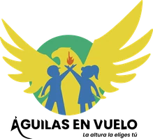
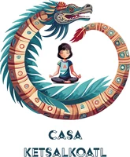
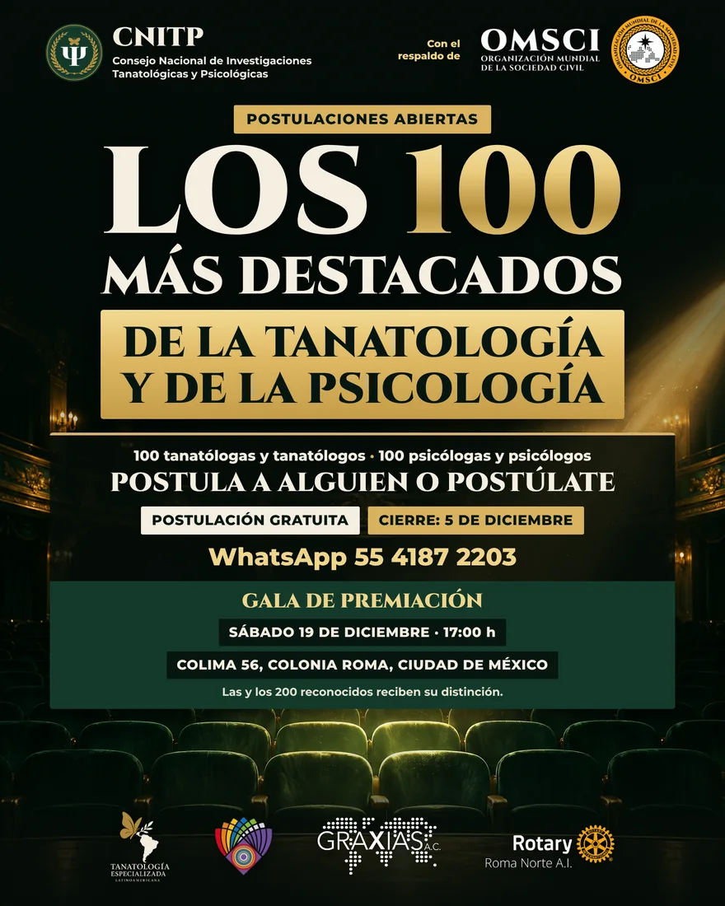
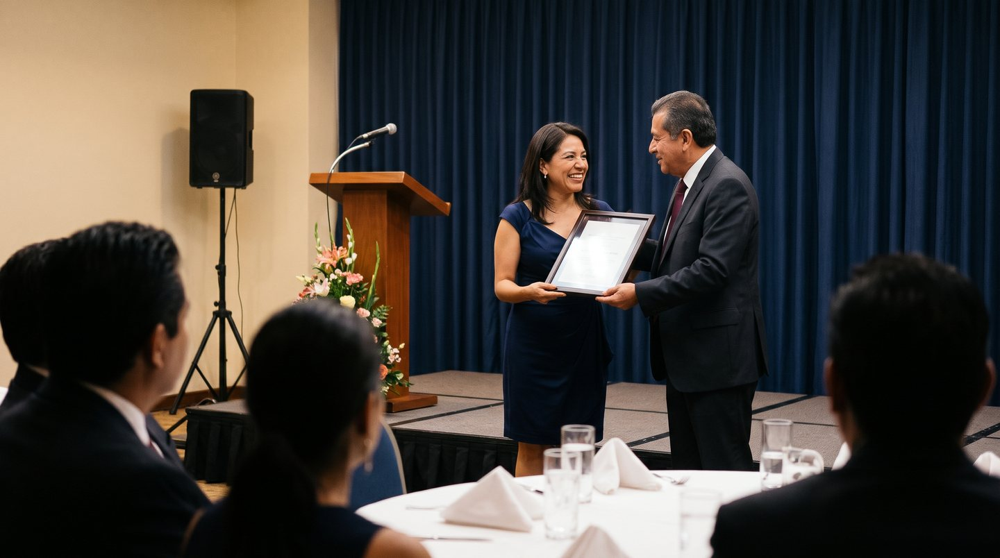
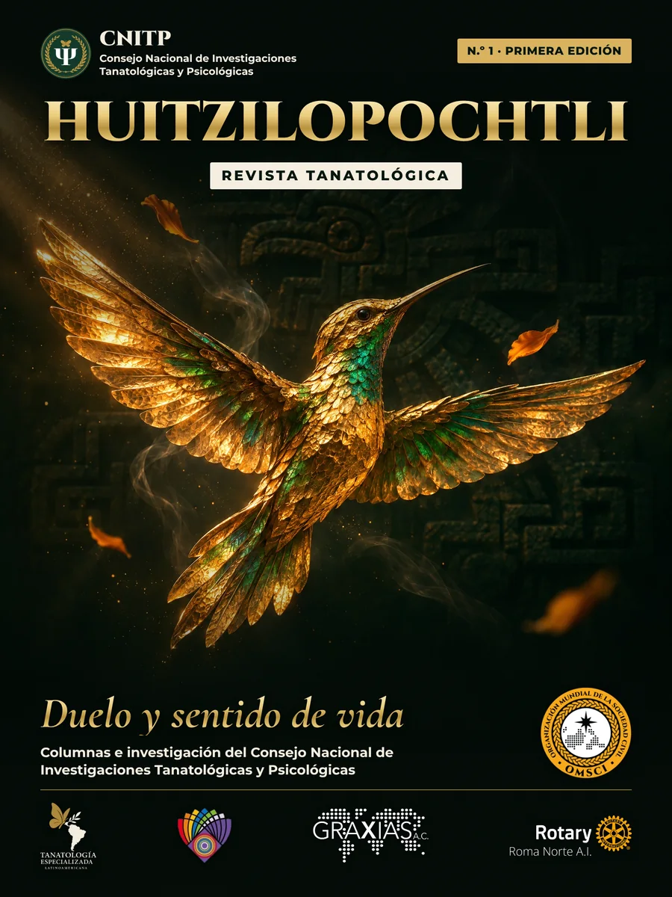

01
Semiótica
La ciencia de los signos. Estudia cómo una persona le da significado a su pérdida: con palabras, símbolos y rituales.
Consejo Nacional de Investigaciones Tanatológicas y Psicológicas
Investigamos, formamos y reconocemos en dos áreas: Tanatología y Psicología. Lo hacemos desde tres ciencias: la semiótica, la etología y la antropología. Nuestra raíz no cambia: 17 años formando tanatólogos, cerca de quienes acompañan a otras personas.
ANTES Instituto Nacional de Estudios Superiores en Tanatología
Esta mariposa la dibuja una ecuación: r = ecos t − 2 cos 4t − sin5(t/12)
17
años de trayectoria en formación, capacitación y certificación
+9,000
personas graduadas de nuestros programas
+40
instituciones con convenio de colaboración
2
áreas de estudio: Tanatología y Psicología
La reconciliación entre la psique, el duelo, la infancia y las expectativas.
Durante 17 años fuimos el Instituto Nacional de Estudios Superiores en Tanatología. Hoy somos un Consejo con dos áreas, Tanatología y Psicología: investigamos, convertimos esa investigación en programas de formación y certificamos a quienes los concluyen.
Ponemos la tecnología al servicio de un propósito: que las personas se sientan plenas, productivas y amadas. Para lograrlo trabajamos con un portafolio transversal de herramientas.
01
La ciencia de los signos. Estudia cómo una persona le da significado a su pérdida: con palabras, símbolos y rituales.
02
La ciencia del comportamiento. En ella se apoya la teoría del apego, que explica por qué una separación duele.
03
La ciencia de las culturas. Estudia cómo cada comunidad se despide de quienes ama.


Elige el área que quieres conocer.
En las dos áreas encuentras los mismos seis apartados: investigación, talleres, cursos, certificaciones, diplomados y la postulación a Los 100.
Estudia la pérdida, la muerte y el duelo: sus tipos, sus ritos y su acompañamiento.
Elige un tema de esta área y desarróllalo en 3 meses, con asesoría del Consejo.
Líneas de investigación del área
Práctica guiada de un tema, en una sesión de 2 a 3 horas.
El estudio completo de un campo, de 2 a 6 clases.
Varios cursos que se complementan dentro de un mismo campo.
01Vínculos y Ciclo de Vida
Vínculo de pareja · Vínculo humano-animal · El concepto de muerte en la infancia
02Pérdida Ambigua, Económica y Corporal
Tres campos de estudio en una sola certificación
03Cultura, Símbolo y Ritual
Fundamentos de tanatología · Antropología de la muerte en México
04Práctica Profesional Supervisada
Práctica supervisada con dolientes · Gestión del consultorio
Un módulo de fundamentos y 11 seminarios de especialidad. Modalidad en línea: sesiones en vivo por Zoom, con grabación disponible. No se requiere experiencia previa.
Postula a una tanatóloga o a un tanatólogo, o postúlate. La postulación es gratuita y cierra el 5 de diciembre.
Estudia la mente y la conducta: la crisis, el vínculo, el sentido de vida y el símbolo.
Elige un tema de esta área y desarróllalo en 3 meses, con asesoría del Consejo.
Líneas de investigación del área
Práctica guiada de un tema, en una sesión de 2 a 3 horas.
El estudio completo de un campo, de 2 a 6 clases.
Varios cursos que se complementan dentro de un mismo campo.
01Intervención en Crisis y Emergencias
Primera ayuda psicológica · Suicidología · Emergencias en comunidades educativas
02Apego y Desarrollo
Teoría del apego · Infancia y adolescencia
03Logoterapia y Análisis Transaccional
Lectura guiada de Frankl · Introducción al Análisis Transaccional
Cada diplomado estudia la obra de un autor: sus conceptos, su método y su aplicación.
Viktor E. Frankl
Obra base: «El hombre en busca de sentido».
Voluntad de sentido · Vacío existencial · Sentido ante el sufrimiento · Diálogo socrático
Thomas A. Harris y Eric Berne
Obra base: «Yo estoy bien, tú estás bien».
Estados del yo: Padre, Adulto y Niño · Las cuatro posiciones vitales · Transacciones y juegos psicológicos
Carl Gustav Jung
Tema central: el proceso de individuación.
Inconsciente colectivo · Arquetipos · Introversión y extraversión · Sueños y símbolos
Emanuel Swedenborg
Enfoque: historia de las ideas y psicología de la espiritualidad.
Su obra científica sobre el cerebro · La teoría de las correspondencias · Sus textos sobre la vida después de la muerte · Su influencia en la literatura y en C. G. Jung
Educación continua: estos programas no sustituyen el título ni la cédula profesional que la ley pide para ejercer la psicología.
Postula a una psicóloga o a un psicólogo, o postúlate. La postulación es gratuita y cierra el 5 de diciembre.
de la tanatología y de la psicología
El Consejo distingue la trayectoria de 100 tanatólogas y tanatólogos y de 100 psicólogas y psicólogos. Puedes postular a otra persona o postularte. La postulación es gratuita.
100
Uno de estos lugares puede ser para alguien que tú conoces.
100
Otro puede ser para ti.
Reconoce a quien te formó o te acompañó, o presenta tu propia trayectoria.
Postular a alguien Postularme01
Llena el formulario de postulación. Es gratuito.
02
Adjunta la evidencia de trayectoria.
03
El comité evaluador revisa cada postulación.
04
Se publica la lista de las y los 200 reconocidos.


Las y los 200 reconocidos reciben su distinción en una ceremonia de gala.
La postulación es gratuita. La gala tiene costo.
Con el respaldo de la Organización Mundial de la Sociedad Civil (OMSCI).
Certifícate como investigadora o investigador del CNITP.
Elige un tema, desarróllalo en 3 meses y entrégalo en el formato del Consejo. Si tu trabajo es aprobado, recibes tu certificación.
01
Dentro de una de las líneas de investigación del Consejo.
02
De 2 a 3 cuartillas: pregunta, objetivo y método.
03
Con asesoría del Consejo durante el proceso.
04
Mínimo 15 cuartillas, formato APA 7, resumen de 250 palabras y al menos 15 referencias.
05
Un comité revisa originalidad, rigor y ética: casos anónimos y con consentimiento.
06
Si tu trabajo es aprobado, recibes tu certificación y se publica en los medios del Consejo.
Área de Tanatología
Área de Psicología
Para tu primera investigación.
Para publicar y presentar tus resultados.
Para gobierno, empresas, universidades y organizaciones.

Certifícate como columnista.
El Consejo lanza «Huitzilopochtli», su revista tanatológica. Buscamos columnistas que escriban con claridad sobre el duelo y el sentido de vida.
¿Te interesa alguno de nuestros programas?
Ponte en contacto con nosotros y cuéntanos qué buscas.
Toca el número para escribirnos por WhatsApp.
Déjanos tus datos y dinos qué programa te interesa. Con ellos, el equipo del Consejo se pone en contacto contigo.
El formulario se abre en una pestaña nueva.